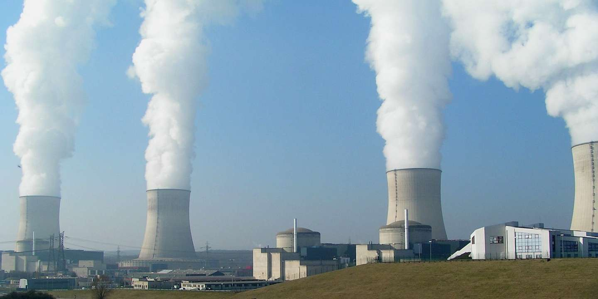

À savoir dans un premier temps que le streaming est un moyen de diffusion et de lecture en ligne et en continu de données multimédias,
cela permet plus récemment la diffusion en direct. Cela est différent du téléchargement, qui consiste à d’abord obtenir les données, puis les lire localement, télécharger dans dans la mémoire. En quantité de données transférées, les deux méthodes sont à peu près égales, mais ce qui rend le streaming très utilisé et à la mode de nos jours, ce sont les plateformes de streaming fortes en marketing qui l’utilise pour le très peu de places que ces vidéos demandent dans la mémoire, sa rapidité à lancer des vidéos, et sa capacité à être une diffusion directe. Pour grossir la différence, si vous voulez télécharger ou regarder une vidéo sur votre téléphone de 8Go avec un forfait de 100Go, c’est comme boire des verres d’eau de 80 cl par 80, ou boire directement au goulot de la bouteille de 1 litre, c’est plus pratique, mais on boit pas que deux verres.
Le streaming est donc la friandise préféré de nombreux utilisateurs du web, mais cela a un impact. Le streaming aurait pris une part de 60 % du flux des données mondiaux en 2015, avec une production indirecte de plus de 300 millions de tonnes de CO2 par an, soit 1 % des émissions de gaz à effet de serre. Ce chiffre étant trop peu élevé pour être pris au sérieux, de nos jours ce flux serait estimé à 80 %. Internet émettrait en tout l’équivalent de CO2 du trafic aérien, avec une croissance de production de données phénoménales, 90 % des données ont été produites en 2 ans, et le numérique produirait 16 % de l’électricité mondiale, et d’ici un an, 20 %. Les terminaux, c’est – à – dire les ordinateurs, les tablettes, les téléphones, seraient la cause de la moitié de la pollution d’internet, l’autre moitié étant les datacenter et les infrastructures. Même si les relevés de chiffres ne suffisent pas à alarmer tout le monde, leur croissance le devrait. Le problème avec cette pollution est qu’elle est indirecte, et dans ce cas les solutions ne sont donc pas souvent chercher au bon endroit, on aura beau changer d’énergie et en choisir des renouvelables, la quantité de consommation sera toujours là. Ce qu’il faudrait revoir également, ce serait notre consommation du numérique, optimiser notre utilisation du web, mais comment faire…